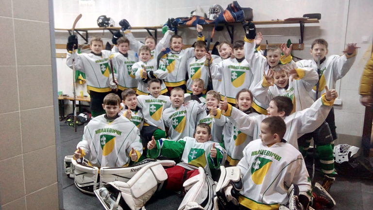

2008 ГОД РОЖДЕНИЯ

Первый тренер команды — Милевич Владислав Вадимович (с 2015 года до июля 2017 года). С сентября 2017 года команду тренирует Казюлин Александр Сергеевич. В чемпионате Беларуси 2017/2018 команда заняла шестое место. Более подробная информация о составе команды и ее выступлениях представлена в соответствующих вкладках.